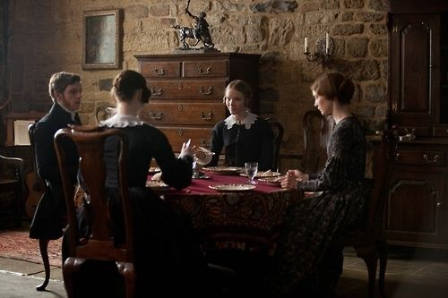

Jane Eyre - Charlotte Brontë
Plot overview
The novel is written as an autobiography retrospectively, the narrator being Jane Eyre herself. The actions take place in five significant locations, which are emphasizing different stages of her personal development.
The first part is represented by the time she spent at Gateshead, family Reed’s home. That was where the roots of her unhappiness were as well as the place where she endured some of her greatest fears up to the point in which she became ill. In that period, Jane, a 10-year-old orphan, was living with her cruel aunt and her cousins who were treating her disrespectfully, unfairly, with not a little kindness. Apart from Bessie Lee, the maid, who cared about Jane even though she did not show this really often, she was thought to be a burden by everyone and was constantly rejected. Therefore, her aunt decided to send her to a boarding school, which leads to the next remarkable period.
At the Lowood Institution, a charity school, Jane and the other girls were facing poor conditions. However, she made a great friend, Helen Burns, who helped her adapt to this environment. Moreover, she became more confident and learnt to control her feelings. Unfortunately, Helen dies of tuberculosis. After six years of studying, Jane became a teacher at Lowood for two years, until she realised she was craving for new experiences.
Consequently, she became a governess for a French girl, Adèle Varens, at a manor called Thornfield. The owner, Mr. Edward Rochester, brought Adèle to England after her mother abandoned her, although she was not his daughter. Jane fell in love with Mr. Rochester, while, after several events, people expected him to marry the socialite Blanche Ingram. However, he eventually confessed his love for Jane and proposed to her. On the wedding day, it came out that Edward was already married with a mad woman, Bertha Manson, who was secretly locked on the third floor of the house due to her aggressive behaviour. Even though he had pure intentions and begged her to live together in another country, as husband and wife, despite the laws, Jane decided that it would be wrong and against her principles to become his mistress.
Therefore, broken and suffering, she left Thornfield with no destination, relying only on Divinity and nature. After some harsh days, she found help at a kind family who was living in a manor called Marsh End or Moor House. Later, she happily discovered that those are her cousins and that she inherited from her uncle a great amount of money that allowed her to live independently. During her time there, Jane was a schoolmistress for girls of all ages. One of the cousins, St. John, a clergyman, was intending to travel to India to become a missionary and he asked her to go too as his wife, believing that she would be suitable for helping him. Jane would have accepted to accompany him as his sister, but he insisted on getting married. Being confused and under all the pressure St. John put on her, Jane almost accepted when she suddenly heard Mr. Rochester’s voice calling her name from an unknown place. At that moment, she decided to hurry back to Thornfield.
Despite her expectations, she only found a “blackened ruin” (Charlotte Brontë, Jane Eyre, Chapter XXXVI). Bertha Mason, who then killed herself by jumping from the roof, caused a fire that destroyed the house and led to Mr. Rochester having amputated a hand and losing sight. Jane immediately went to Ferndean Manor, where he was living at that moment with only two servants, Mary and John. This is the place where Jane finally settled and married Edward.
In the end, Jane wrote that she has been happily married for ten years, enjoying perfect equality with her loved one and feeling as the most connected couple in the entire world. Also, Mr. Rochester has regained sight in one eye, being able to see their first son at his birth.

